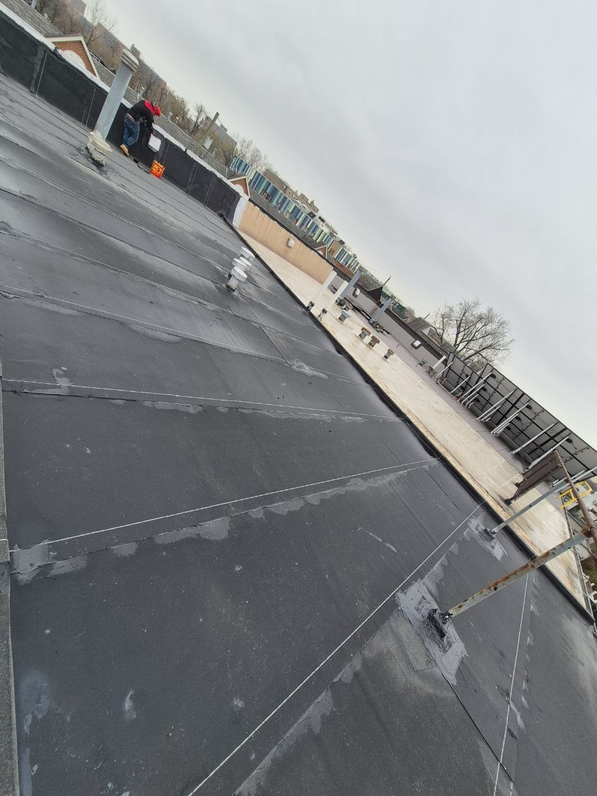
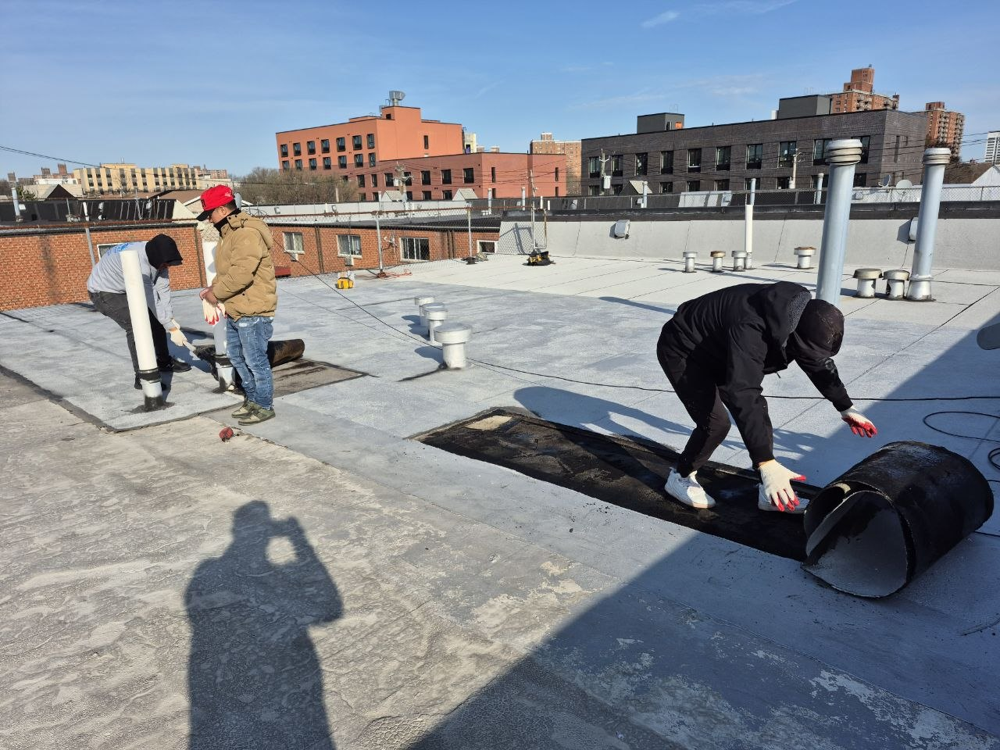
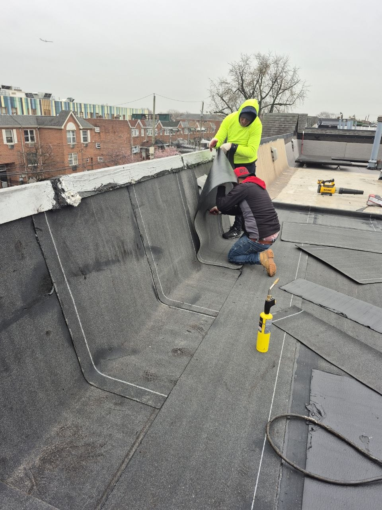
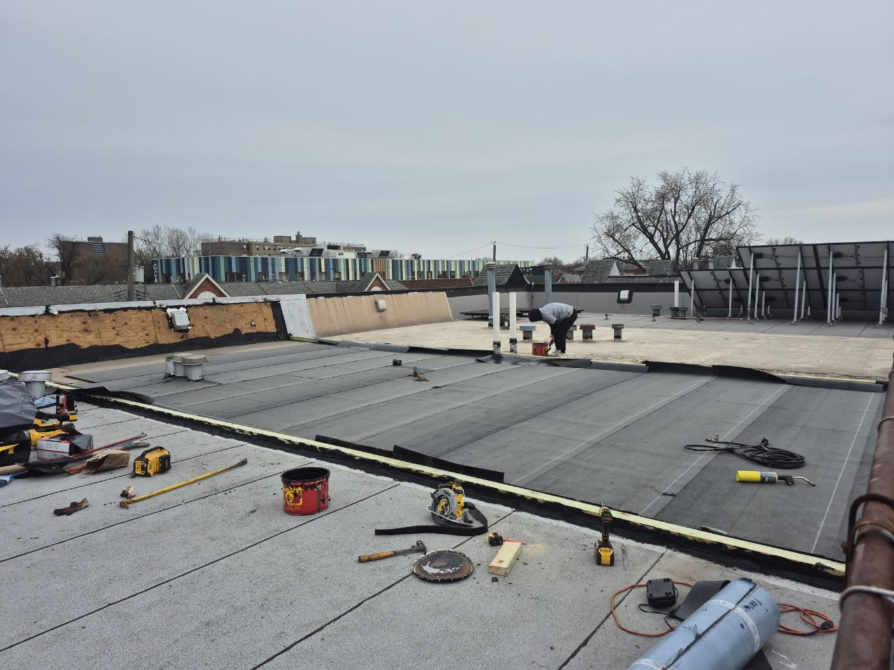
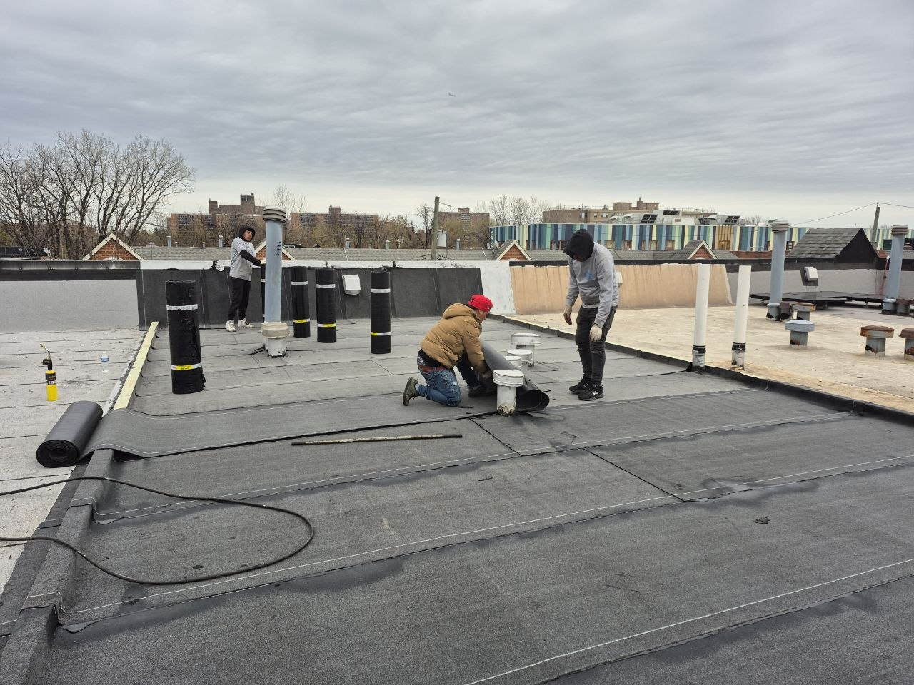
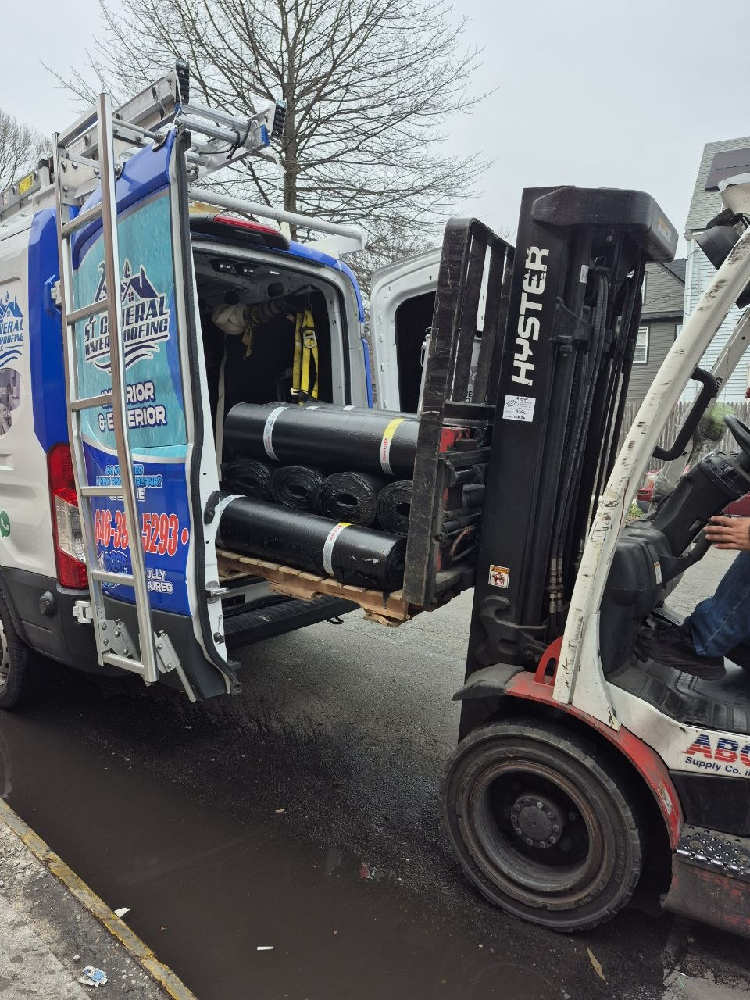

Professional torch-down, EPDM, and TPO roofing solutions for residential and commercial properties across NYC
Flat roofs are a popular choice for both residential and commercial properties in New York City. Whether you need a new flat roof installation or repairs to your existing roof, ST Roofing & Construction LLC has the expertise to deliver exceptional results. Our team specializes in multiple flat roofing systems including torch-down modified bitumen, EPDM (ethylene propylene diene monomer), and TPO (thermoplastic polyolefin) membranes.
With over 15 years of experience in the NYC roofing industry, we understand the unique challenges that flat roofs face in our climate. From heavy rain and snow to intense summer heat, your flat roof needs to withstand it all. We use only premium materials and proven installation techniques to ensure your flat roof provides reliable protection for decades.
Modified bitumen torch-down roofing offers excellent durability and weather resistance. Heat-welded seams create a watertight seal perfect for NYC climate.
Ethylene propylene diene monomer (EPDM) is a highly durable rubber roofing membrane known for its flexibility, UV resistance, and 20+ year lifespan.
Thermoplastic polyolefin (TPO) roofing provides excellent energy efficiency with heat-welded seams and reflective properties to reduce cooling costs.
Fast, reliable repairs for leaks, membrane damage, flashing issues, and ponding water. Same-day service available for emergencies.
Lower installation costs compared to pitched roofs with less material needed
Flat roofs provide additional usable space for HVAC units, rooftop gardens, or solar panels
Easier and safer access for maintenance, repairs, and equipment servicing
Modern flat roofing systems offer excellent insulation and reflective properties
Quality flat roof systems can last 20-30 years with proper maintenance
Clean, contemporary look that complements modern architectural designs
We evaluate your existing roof structure, discuss your needs, and recommend the best flat roofing system for your property.
We provide a comprehensive estimate with material options, timeline, and competitive pricing. You choose the best solution for your budget.
Our certified roofing team installs your flat roof with precision, following manufacturer specifications and building codes.
We inspect every detail of the installation, ensure proper drainage, and provide you with warranty documentation.
Get a free inspection and estimate from our flat roof experts. We're here to help!
Click any photo to view full size.






With proper installation and maintenance, a quality flat roof can last 20-30 years. Torch-down and EPDM systems are particularly well-suited for the NYC climate.
The best material depends on your specific needs. Torch-down modified bitumen is excellent for durability, EPDM offers great flexibility and UV resistance, while TPO provides superior energy efficiency. We can help you choose the right option.
We recommend bi-annual inspections, typically in spring and fall, plus after severe weather events. Regular inspections catch small problems before they become major issues.
In some cases, a overlay is possible if the existing roof is in good condition and meets code requirements. However, a complete tear-off is often recommended for long-term performance. We'll assess your situation during the inspection.